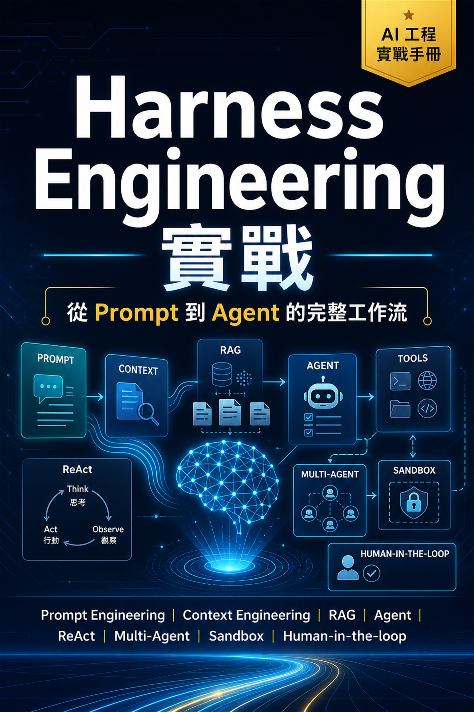

電子書
Harness Engineering 實戰：從 Prompt 到 Agent 的完整工作流
從 Prompt 到 Agent 的完整工作流

Harness Engineering 實戰：從 Prompt 到 Agent 的完整工作流
從 Prompt 到 Agent 的完整工作流
《Harness Engineering 實戰：從 Prompt 到 Agent 的完整工作流》是一本給 AI 初學者的工程工作流手冊。如果你已會使用 ChatGPT、Codex、Claude Code 等 AI 工具，卻發現只會寫 Prompt 不夠，本書將教你把 Prompt、Context、RAG、Agent、Sandbox 與 Human-in-the-loop 串成一條可落地、可驗證的 AI 流程。這不是只追求神奇提示詞的書，而是教你設計 AI 任務的資料、工具、權限、驗證與人工審核的實戰手冊。
作品介紹；目前未提供購買或試閱入口